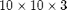
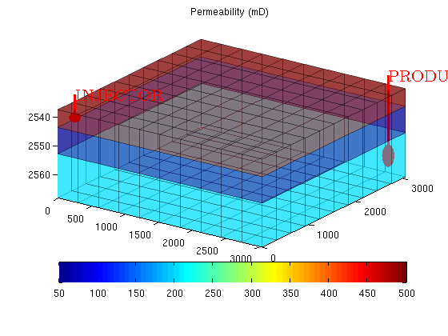
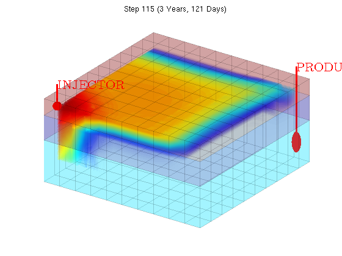
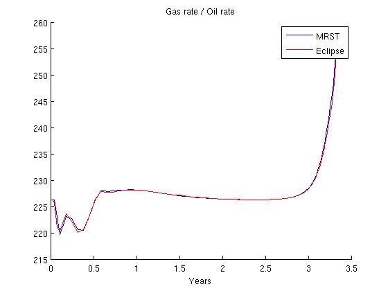
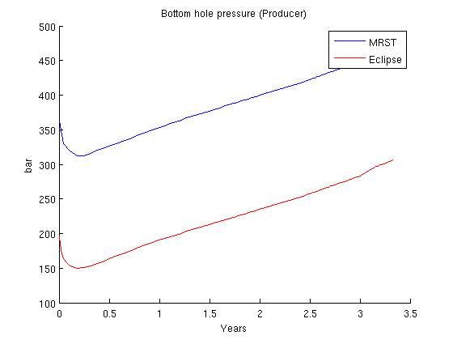
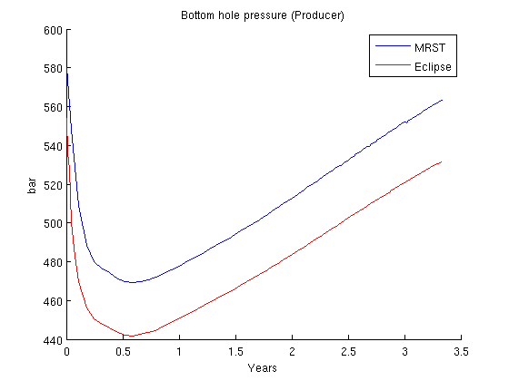

Contents
SPE1 case for fully implicit black oil solver
This example solves the SPE1 problem which consists of gas injection in a small () reservoir with a single producer and injector. The problem is parsed and solved from the problem file "odeh_adi" and the result is then compared to output from a major commercial reservoir simulator (Eclipse 100).
require ad-fi deckformat % Read and process file. current_dir = fileparts(mfilename('fullpath')); fn = fullfile(current_dir, 'odeh_adi.data'); deck = readEclipseDeck(fn); % The deck is given in field units, MRST uses metric. deck = convertDeckUnits(deck); G = initEclipseGrid(deck); G = computeGeometry(G); rock = initEclipseRock(deck); rock = compressRock(rock, G.cells.indexMap); % Create a special ADI fluid which can produce differentiated fluid % properties. fluid = initDeckADIFluid(deck); % The case includes gravity gravity on % The initial state is provided as a binary file. The initial state % contains a uniform mixture of water (.12) and oil (.88). load initialState;
Plot well and permeability
The permeability consists of three layers going from high to low permeability along the z axis. The wells are completed in the upper and lower layer for the injector and producer respectively. To get a well object, we simply process the first control from the schedule.
Note that a schedule is not necessary to solve problems using the fully implicit solver: solvefiADI is capable of taking a well object directly and solving for a single time step in a manner similar to the other MRST solvers.
clf; W = processWells(G, rock, deck.SCHEDULE.control(1)); plotCellData(G, convertTo(rock.perm(:,1), milli*darcy), 'FaceAlpha', .5, ... 'EdgeAlpha', .3, 'EdgeColor', 'k'); plotWell(G, W); title('Permeability (mD)') axis tight; view(35, 40); colorbar('SouthOutside');
Initialize schedule and system before solving for all timesteps
We extract the schedule from the read deck and create a ADI system for our problem. The system autodetects a black oil problem and sets up default values for the various options. The only thing we change is to disable the CPR preconditioner as the problem is too small to benefit from preconditioning: The overhead required for the preconditioner is bigger than the benefits offered by a specialized solver.
During some time steps (67 and 91) the Newton iterations oscillate. The solver detects this, and dampens or relaxes the step length when this behavior is observed.
To see detailed convergence analysis during each time step, set verbose to on using
mrstVerbose on
schedule = deck.SCHEDULE;
system = initADISystem(deck, G, rock, fluid, 'cpr', false);
timer = tic;
[wellSols states iter] = runScheduleADI(state, G, rock, system, schedule);
toc(timer)
Step 1 of 114 (Used 4 iterations) Step 2 of 114 (Used 6 iterations) Step 3 of 114 (Used 8 iterations) Step 4 of 114 (Used 7 iterations) Step 5 of 114 (Used 7 iterations) Step 6 of 114 (Used 5 iterations) Step 7 of 114 (Used 5 iterations) Step 8 of 114 (Used 5 iterations) Step 9 of 114 (Used 5 iterations) Step 10 of 114 (Used 5 iterations) Step 11 of 114 (Used 5 iterations) Step 12 of 114 (Used 5 iterations) Step 13 of 114 (Used 5 iterations) Step 14 of 114 (Used 5 iterations) Step 15 of 114 (Used 3 iterations) Step 16 of 114 (Used 5 iterations) Step 17 of 114 (Used 5 iterations) Step 18 of 114 (Used 3 iterations) Step 19 of 114 (Used 4 iterations) Step 20 of 114 (Used 4 iterations) Step 21 of 114 (Used 4 iterations) Step 22 of 114 (Used 5 iterations) Step 23 of 114 (Used 3 iterations) Step 24 of 114 (Used 4 iterations) Step 25 of 114 (Used 5 iterations) Step 26 of 114 (Used 4 iterations) Step 27 of 114 (Used 3 iterations) Step 28 of 114 (Used 4 iterations) Step 29 of 114 (Used 3 iterations) Step 30 of 114 (Used 4 iterations) Step 31 of 114 (Used 4 iterations) Step 32 of 114 (Used 3 iterations) Step 33 of 114 (Used 3 iterations) Step 34 of 114 (Used 3 iterations) Step 35 of 114 (Used 3 iterations) Step 36 of 114 (Used 4 iterations) Step 37 of 114 (Used 4 iterations) Step 38 of 114 (Used 3 iterations) Step 39 of 114 (Used 3 iterations) Step 40 of 114 (Used 3 iterations) Step 41 of 114 (Used 4 iterations) Step 42 of 114 (Used 3 iterations) Step 43 of 114 (Used 4 iterations) Step 44 of 114 (Used 5 iterations) Step 45 of 114 (Used 3 iterations) Step 46 of 114 (Used 3 iterations) Step 47 of 114 (Used 4 iterations) Step 48 of 114 (Used 3 iterations) Step 49 of 114 (Used 3 iterations) Step 50 of 114 (Used 4 iterations) Step 51 of 114 (Used 3 iterations) Step 52 of 114 (Used 3 iterations) Step 53 of 114 (Used 5 iterations) Step 54 of 114 (Used 4 iterations) Step 55 of 114 (Used 3 iterations) Step 56 of 114 (Used 4 iterations) Step 57 of 114 (Used 3 iterations) Step 58 of 114 (Used 3 iterations) Step 59 of 114 (Used 3 iterations) Step 60 of 114 (Used 3 iterations) Step 61 of 114 (Used 3 iterations) Step 62 of 114 (Used 4 iterations) Step 63 of 114 (Used 3 iterations) Step 64 of 114 (Used 4 iterations) Step 65 of 114 (Used 4 iterations) Step 66 of 114 (Used 3 iterations) Step 67 of 114 (Used 3 iterations) Oscillating behavior detected: Relaxation set to 0.9 Step 68 of 114 (Used 6 iterations) Step 69 of 114 (Used 3 iterations) Step 70 of 114 (Used 3 iterations) Step 71 of 114 (Used 4 iterations) Step 72 of 114 (Used 3 iterations) Step 73 of 114 (Used 3 iterations) Step 74 of 114 (Used 3 iterations) Step 75 of 114 (Used 3 iterations) Step 76 of 114 (Used 3 iterations) Step 77 of 114 (Used 3 iterations) Step 78 of 114 (Used 3 iterations) Step 79 of 114 (Used 3 iterations) Step 80 of 114 (Used 3 iterations) Step 81 of 114 (Used 3 iterations) Step 82 of 114 (Used 3 iterations) Step 83 of 114 (Used 3 iterations) Step 84 of 114 (Used 4 iterations) Step 85 of 114 (Used 3 iterations) Step 86 of 114 (Used 3 iterations) Step 87 of 114 (Used 3 iterations) Step 88 of 114 (Used 3 iterations) Step 89 of 114 (Used 3 iterations) Step 90 of 114 (Used 3 iterations) Step 91 of 114 (Used 3 iterations) Oscillating behavior detected: Relaxation set to 0.9 Step 92 of 114 (Used 6 iterations) Step 93 of 114 (Used 3 iterations) Step 94 of 114 (Used 3 iterations) Step 95 of 114 (Used 3 iterations) Step 96 of 114 (Used 3 iterations) Step 97 of 114 (Used 3 iterations) Step 98 of 114 (Used 2 iterations) Step 99 of 114 (Used 2 iterations) Step 100 of 114 (Used 5 iterations) Step 101 of 114 (Used 2 iterations) Step 102 of 114 (Used 2 iterations) Step 103 of 114 (Used 2 iterations) Step 104 of 114 (Used 4 iterations) Step 105 of 114 (Used 2 iterations) Step 106 of 114 (Used 2 iterations) Step 107 of 114 (Used 4 iterations) Step 108 of 114 (Used 2 iterations) Step 109 of 114 (Used 3 iterations) Step 110 of 114 (Used 3 iterations) Step 111 of 114 (Used 3 iterations) Step 112 of 114 (Used 3 iterations) Step 113 of 114 (Used 3 iterations) Step 114 of 114 (Used 3 iterations) Elapsed time is 33.065974 seconds.
Plot the solution
We opt for a simple volume plot of the gas saturation. If opengl capability is set to software, we fall back to a simpler cell data plot. If you have problems with getting good plots you can set useVolume to false.
oglcapable = opengl('data'); useVolume = ~oglcapable.Software; figure(1) view(35, 40); for i = 2:numel(states) [az el] = view(); clf; % Plot the wells plotWell(G, W); if useVolume % Plot the grid as a transparent box colorized by the permeability plotCellData(G, convertTo(rock.perm(:,1), milli*darcy), ... 'FaceAlpha', .2, 'EdgeAlpha', .1, 'EdgeColor', 'k'); % Create isosurfaces based on the gas saturation plotGridVolumes(G, states{i}.s(:,3), 'N', 100, 'extrudefaces', false) else plotCellData(G, states{i}.s(:,3)); end time = sum(schedule.step.val(1:i-1)); title(['Step ' num2str(i) ' (' formatTimeRange(time) ')']) axis tight off view(az, el); pause(.1) end
Set up plotting
Load summary from binary file and find indices of the producer and injector.
load SPE1_smry inj = find([wellSols{1}.sign] == 1); prod = find([wellSols{1}.sign] == -1); % Since there are zero values in the first step of the summary, we ignore % the first entry to get better plot axes. ind = 2:118; % Put the well solution data into a format more suitable for plotting [qWs, qOs, qGs, bhp] = wellSolToVector(wellSols); % Get timesteps for both the reference and the MRST run T = convertTo(cumsum(schedule.step.val), year); Tcomp = smry.get(':+:+:+:+', 'YEARS', ind);
Plot Producer Gas/Oil ratio
The most interesting part of the SPE1 case is the gas/oil ratio at the producer. We convert the field units and plot the dimensionless ratio. As should be apparent from the figure, the implicit solver is able to qualitatively reproduce the same outflow profile.
clf ecl = convertFrom(smry.get('PRODUCER', 'WGOR', ind), 1000*ft^3/stb)'; mrst = qGs(:,prod)./qOs(:,prod); hold on plot(T, mrst) plot(Tcomp, ecl, 'r'); legend({'MRST', 'Eclipse'}) xlabel('Years') title('Gas rate / Oil rate')
Plot Injector Bottom Hole Pressure
The injector is rate controlled and so the bottom hole pressure is solved in the implicit loop. Plot it to verify accuracy.
clf ecl = convertFrom(smry.get('PRODUCER', 'WBHP', ind), psia)'; mrst = bhp(:,prod); hold on plot(T, convertTo(mrst, barsa)) plot(Tcomp, convertTo(ecl, barsa), 'r'); legend({'MRST', 'Eclipse'}) xlabel('Years') ylabel('bar') title('Bottom hole pressure (Producer)')
Plot Injector Bottom Hole Pressure
clf ecl = convertFrom(smry.get('INJECTOR', 'WBHP', ind), psia)'; mrst = bhp(:,inj); hold on plot(T, convertTo(mrst, barsa)) plot(Tcomp, convertTo(ecl, barsa), 'r'); legend({'MRST', 'Eclipse'}) xlabel('Years') ylabel('bar') title('Bottom hole pressure (Producer)')